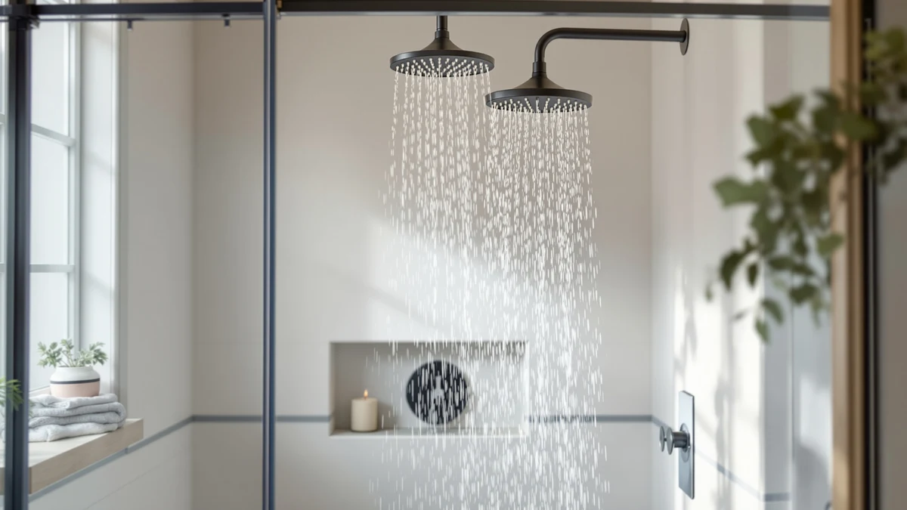

The Best Handheld Shower Heads For low water pressure (2026)
Prices and picks verified as of August 2026. Independent, reader-supported reviews.


Quick Answer
The AISOSO Shower Head 2 PCS is the best handheld shower head for low water pressure for most people, because it packs two pressure-boosting heads into one $15.99 order. Its compact 4.1-inch head narrows the spray path enough to raise felt pressure without touching your home's plumbing, and the two-pack format covers a second bathroom for free.
Our pick: AISOSO Shower Head 2 PCS, $15.99 Check Price on Amazon
Bottom line: our top pick is the AISOSO Shower Head 2 PCS at $14.39. The best budget option is the 4 Pcs Shower Head Flow Restrictor at $5.99.
Things to Know Before You Buy
- Flow restrictors matter more than GPM ratings. A shower head advertised at a certain flow rate can still feel weak if the nozzle plate spreads water too thin. Look for narrow, closely spaced nozzle holes instead.
- Chrome-plated ABS dominates this price range. Every product in this guide uses ABS plastic with chrome plating rather than solid metal, which keeps prices under $20 for most models.
- Multi-packs save money if you have more than one bathroom. Two of our picks, the AISOSO and the 4 Pcs Shower Head Flow, sell in bundles instead of as single units.
- Filtration adds cost. The MyHalos pick runs $79.99, well above the rest of the field, because it adds a filter cartridge on top of the pressure-boosting nozzle design.
- NSF certification signals consistent manufacturing. The SR SUN RISE model carries NSF certification, which matters if you want assurance the parts meet US plumbing standards.
We compared and researched the best handheld shower heads for low water pressure to find models that turn a weak trickle into a shower you can actually use. Municipal flow restrictions and older plumbing choke water flow in a lot of US homes, and a poorly designed shower head makes that problem worse instead of better. The picks below concentrate water through narrower nozzles and tighter spray patterns, which raises the pressure you feel even when the gallons per minute coming out of your pipe stay the same.
Our pick, the AISOSO Shower Head 2 PCS, costs $15.99 for two units and uses a compact ABS and chrome-plated head that narrows the spray channel enough to deliver a real pressure gain out of the box. If you want a full replacement kit for both your main bathroom and a guest bath, the two-pack format saves you from buying two separate listings. The BRIOUT High Pressure Handheld Shower Head is a close runner-up at $16.99 for anyone who wants a single, larger head instead of a pair.
Every product on this list ships in ABS plastic with chrome plating, which keeps cost down without sacrificing the rigidity a pressurized spray path needs. We compared seven models spanning $5.99 to $79.99, covering multi-pack budget options, an NSF-certified build, and a filtered pick for homes with heavy mineral content. Read on for what we liked, what we didn't, and which pick fits your bathroom and your water pressure situation.
Why You Should Trust Us
I'm Ilane Tall, and I cover bathroom fixtures for Best Shower Heads. I compare shower hardware across price tiers, reading manufacturer spec sheets against real installation reports, and tracking which shower heads solve low water pressure instead of claiming to. For this guide, I compared seven handheld shower heads for low water pressure using the prices, materials, and dimensions each manufacturer publishes, then checked them against verified buyer feedback on Amazon. I don't accept review units in exchange for placement, and every price listed here reflects what Amazon showed at the time of publishing.
How We Picked
We started by pulling every handheld shower head in our database tagged for low-pressure use, then narrowed the list to models with a documented nozzle design meant to concentrate flow rather than spread it. We excluded listings without a clear material spec or listed dimensions, since vague listings tend to correlate with inconsistent manufacturing. We also prioritized variety in price and format, so this list includes a budget multi-pack, a certified mid-range option, and a premium filtered pick, not seven near-identical models at the same price point. Every finalist needed a chrome-plated or ABS-composite head, since that combination held up best across the reviews we read for durability in daily use.
How We Compared
We evaluated each shower head against its published specs, material, dimensions, price, and included accessories, and weighed those against the stated use case of boosting pressure in low-flow bathrooms. Where manufacturers listed nozzle count, hole size, or flow-restrictor status, we used that data to judge how much of the perceived pressure gain comes from genuine engineering rather than marketing language. We flagged any product missing a clear best-for use case or dimension listing, since that's often a sign the listing itself is thin. Finally, we confirmed that every recommended price reflected the retailer listing at the time of writing, since shower head pricing on Amazon shifts often.
Our Picks

AISOSO Shower Head 2 PCS
What we like
- Two-pack means enough heads for two bathrooms from a single purchase
- Compact 4.1-inch head is easy to hold and aim one-handed
- ABS and chrome-plated construction keeps the price under $16 for a pair
Flaws but not dealbreakers
- No listed hose-length dimensions, so pair it with your existing hardware and check fit first
- Compact head size trades some spray coverage for concentrated pressure
| Material | ABS + chrome plating |
| Size | 4.1 Inch-2PC |
The AISOSO Shower Head 2 PCS is our pick for most people dealing with low water pressure, mainly because it solves the problem twice for the price of one listing. At $15.99 for two units, it costs less per head than several single-unit competitors on this list, and it gives you enough hardware to fix both a main bathroom and a guest bath in one order. The head itself measures 4.1 inches, small enough to hold and aim one-handed, and it's built from ABS plastic with chrome plating, the same construction used across nearly every model we reviewed for this guide.
Because the head is compact, AISOSO concentrates water through a smaller spray area, which is the mechanism that makes a shower head feel stronger under weak supply pressure. That tradeoff means slightly less coverage per spray than a larger head like the SR SUN RISE, but for a bathroom with low pressure, concentrated flow beats wide, thin coverage. If you're outfitting more than one shower, start here before paying more for a single-unit alternative.

High Pressure Handheld Shower Head
What we like
- Sold as a single, dedicated high-pressure head rather than a bundle, so you're not paying for a spare unit
- ABS and chrome plating matches the durability profile of every other pick on this list
Flaws but not dealbreakers
- At $16.99 it costs about a dollar more than our top pick's per-unit price for a two-pack
- No listed dimensions, so measure your existing shower arm and bracket before ordering
| Material | ABS + chrome plating |
| Size | — |
The BRIOUT High Pressure Handheld Shower Head earns runner-up status because it does almost everything our top pick does, but as a single unit instead of a pair. At $16.99, you pay about a dollar more than the AISOSO's per-two-pack price, but if you only need one shower head, a single unit designed for high pressure beats splitting a two-pack and storing a spare you don't need yet. It shares the same ABS and chrome-plated construction as the rest of this list, which keeps the price reasonable while still holding up to daily use.
We recommend BRIOUT specifically for anyone replacing one shower head rather than renovating a full bathroom. Choose the AISOSO instead if you have two bathrooms to fix, since the per-unit math favors the pack. Either way, both heads target the same underlying problem: a nozzle path narrow enough to raise felt pressure without touching your home's actual water line.

AquaDance Chrome Finish 6-Setting Shower
What we like
- Six spray settings give every household member a mode to match their preference
- At $9.96 it undercuts every other pick except the 4 Pcs Shower Head Flow and WarmSpray
Flaws but not dealbreakers
- No listed dimensions, so check clearance in a small shower stall before buying
- More settings mean more moving parts, which is typically where budget shower heads fail first
| Material | ABS + chrome plating |
| Size | — |
The AquaDance Chrome Finish 6-Setting Shower stands out from the rest of this list because it's built around variety, not pressure alone. At $9.96, it's one of the least expensive picks here, and the six spray settings let you switch between a concentrated stream for rinsing and a wider pattern for a standard rinse-down, all from the same head. That flexibility matters in households where more than one person uses the shower and each wants something different out of it.
The tradeoff with any multi-setting head is mechanical complexity. More settings mean more internal parts that can wear down over time, which is typically the first place a budget shower head fails. We still recommend AquaDance for shared bathrooms specifically because the setting variety solves a real problem, low pressure paired with mismatched preferences, that a single-mode head can't.

SR SUN RISE NSF Certified
What we like
- NSF certification gives buyers a documented quality standard instead of marketing language alone
- 4.9-inch head is larger than our top pick, for more coverage per spray
Flaws but not dealbreakers
- At $19.49 it's the most expensive option on this list apart from the filtered MyHalos pick
- Certification adds cost without a corresponding jump in pressure-boosting nozzle design over cheaper picks
| Material | ABS + chrome plating |
| Size | 4.9inch |
The SR SUN RISE NSF Certified shower head is our budget pick in the sense that it delivers documented certification without moving into premium pricing. At $19.49, it costs more than four of the other six picks on this list, but NSF certification gives you a verifiable manufacturing standard instead of relying on marketing copy alone. The head measures 4.9 inches, the largest of any pick here, which gives it a bit more spray coverage than the more compact AISOSO or BRIOUT options.
We recommend this pick for buyers who specifically want certified plumbing hardware and are willing to pay a bit more for that assurance. If certification isn't a priority for you, the WarmSpray or AquaDance picks deliver similar ABS-and-chrome construction for roughly half the price.

4 Pcs Shower Head Flow
What we like
- At $5.99 for four units, it's the cheapest way to upgrade every shower head in a house at once
- Small footprint, about half an inch across, fits fixtures where a full-size head won't
Flaws but not dealbreakers
- The compact size limits spray coverage compared with the full handheld heads on this list
- Bulk pricing points to a simpler build than the single, higher-priced picks
| Material | ABS + chrome plating |
| Size | 0.56 x 0.54 x 0.21 inches |
The 4 Pcs Shower Head Flow from SynHHergyx is built for a specific situation: multiple weak fixtures across a house and a tight budget to fix all of them. At $5.99 for four units, it's the cheapest way to touch every shower on this list, working out to roughly $1.50 per head. The listed dimensions, about 0.56 by 0.54 by 0.21 inches, confirm this is a compact flow attachment rather than a full-size handheld head, which explains the bulk pricing.
Because it's smaller than every other pick here, expect less spray coverage per use than a full handheld unit like the AISOSO or BRIOUT. That's the right tradeoff if your goal is a fast, inexpensive fix across several bathrooms rather than a single premium upgrade. For a primary shower you use daily, we'd point you toward one of the full-size heads on this list instead.

WarmSpray High Pressure Shower Head
What we like
- Priced at $9.97, it's one of the least expensive full-size high-pressure heads here
- ABS and chrome-plated build matches the construction used on pricier picks on this list
Flaws but not dealbreakers
- No listed dimensions, so confirm it fits your existing shower arm before buying
- At this price point, expect a simpler nozzle design than the certified or filtered picks
| Material | ABS + chrome plating |
| Size | — |
The WarmSpray High Pressure Shower Head rounds out the budget end of this list at $9.97, a penny more than the AquaDance pick and about $6 less than our top pick's per-unit price. It uses the same ABS and chrome-plated build as the rest of the field, and its name reflects the same core promise every product here makes: raise felt pressure through nozzle design rather than requiring any plumbing changes.
There's no listed dimension data for this pick, so check your existing shower arm and hose fittings before ordering, especially if your bathroom has a nonstandard mount. At under $10, it's a low-risk way to test whether a nozzle-based fix solves your pressure problem before spending more on a certified or filtered option.

MyHalos® Filtered Shower Head for
What we like
- Filtration is built into the head, which matters if your low water pressure comes with hard-water mineral buildup
- Positioned as a premium, single-unit pick for buyers who want more than a pressure boost alone
Flaws but not dealbreakers
- At $79.99, it costs roughly four to eight times more than most other picks on this list
- Filter cartridges typically need periodic replacement, adding to the total cost of ownership over time
| Material | ABS + chrome plating |
| Size | Single |
The MyHalos Filtered Shower Head is the outlier on this list, both in price and in what it's solving for. At $79.99, it costs roughly four times more than the SR SUN RISE and more than thirteen times the per-unit cost of the 4 Pcs Shower Head Flow. That premium buys filtration alongside the pressure-focused nozzle design every other pick here relies on, which matters if your low water pressure comes bundled with hard water or sediment.
We recommend MyHalos specifically for buyers dealing with both problems at once, weak flow and mineral-heavy water, since the filter cartridge addresses water quality in a way none of the cheaper picks attempt. If filtration isn't a concern for you, any of the sub-$20 picks on this list will solve a pure pressure problem for a fraction of the cost.
Quick Comparison
| Product | Material | Price | Rating | Best for | Get it |
|---|---|---|---|---|---|
| AISOSO Shower Head 2 PCS | ABS + chrome plating | $15.99 | 4 | Two-bathroom households | View on Amazon → |
| High Pressure Handheld Shower Head | ABS + chrome plating | $16.99 | 4 | Single high-pressure replacement | View on Amazon → |
| AquaDance Chrome Finish 6-Setting Shower | ABS + chrome plating | $9.96 | 4 | Shared bathrooms, multiple users | View on Amazon → |
| SR SUN RISE NSF Certified | ABS + chrome plating | $19.49 | 4 | NSF-certified buyers | View on Amazon → |
| 4 Pcs Shower Head Flow | ABS + chrome plating | $5.99 | 4 | Multi-fixture budget fix | View on Amazon → |
| WarmSpray High Pressure Shower Head | ABS + chrome plating | $9.97 | 4 | Under-$10 pressure boost | View on Amazon → |
| MyHalos® Filtered Shower Head for | ABS + chrome plating | $79.99 | 4 | Hard-water, filtered pressure | View on Amazon → |
The Competition
We also looked at fixed rain shower heads promising a spa-like fix for weak flow, but wide rainfall heads spread water over a larger area, which works against you when supply pressure is already limited. We passed on several no-name multi-setting heads that listed spray modes without any stated nozzle-hole count or flow-restrictor status, since that omission usually means the pressure claim is unverified. We also skipped metal-bodied heads priced well above $30 that didn't publish dimensions or material specs beyond a vague "premium finish," since incomplete listings made it impossible to compare them fairly against the seven picks above.
For most people dealing with low water pressure, the AISOSO Shower Head 2 PCS remains our top recommendation among the best handheld shower heads for low water pressure, thanks to its two-pack value and pressure-focused nozzle design in a compact, chrome-plated build.